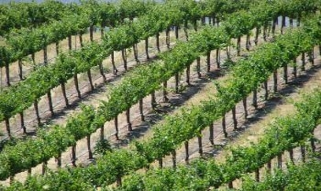

|

|
The precision irrigation project led by UC Merced Professor Stefano Carpin was featured in
Engadget!
VICE Lab is assisting with UAV deployment and multisensor data gathering. Vineyards are ideal testbeds
for robotic solutions to complex navigation and task assignments. These breakthroughs in agricultural
technology are the focus of UC Merced's emerging focus on San Joaquin Valley problems at the coupled
human-environment interface.
|